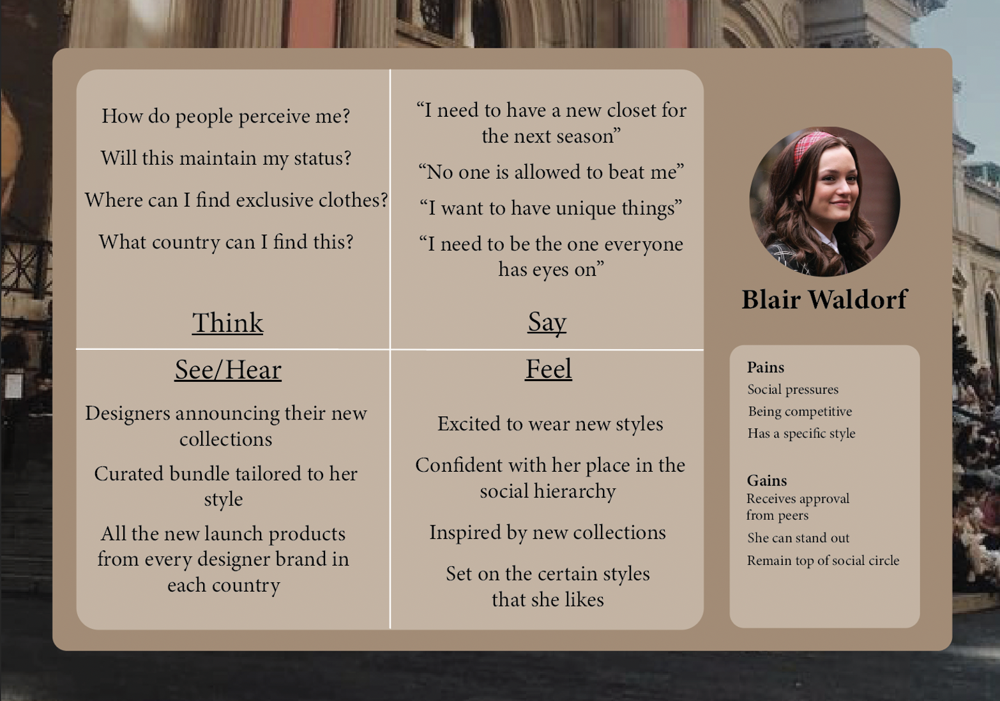
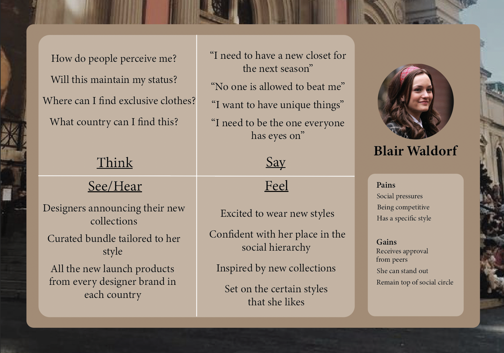

This week we learnt how to connect internal and external hyperlinks to text
Or even an image
For class today I learnt how to add hyperlinks to my website, I think that this will be super useful because what I am currently thinking of is a fashion e-commerce website where comsumers can look at designer brand websites through the e-com website.
Learning how to apply hyperlinks is interesting because it is turning things like text and images into basically buttons. This will give the opportunity to have more interactive designs by giving users more areas to click and discover. Hyperlinks are the fondation of creating a good website, without it you are not able to navigate through pages and that would limit the user experience to only One page which would could mean too much information and too much cognative load for the user. Hyperlinks allows the opportunity to have information in different sections of the website.
As a web designer it is important to consider the most practical placements of a hyperlink, you want to place them in areas that are intuitive for the users to click.
In class we had to make a user persona and empathy map for Spongebob Squarepants, here are my notes from the activity. It was interesting to see the different ways that the group I was working with approached the tasks and how they evaluated his personaility. I think the most important thing to learn is that the more you know about your target market the more you can discuss who they are indepth.


During the week I started putting together my own user persona and empathy map using what I learnt in Web Design as well as what I have learnt in Design for Experience II. I made sure to keep updating and checking in with tutors until these two tasks were finished.
 
